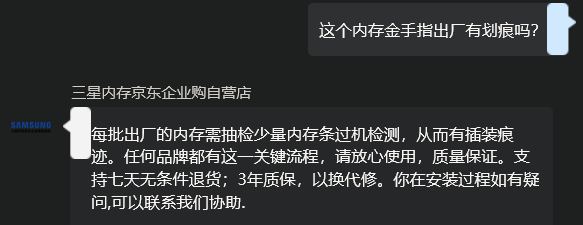
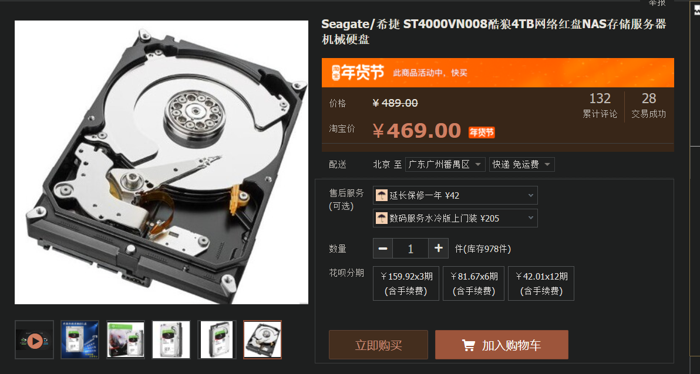
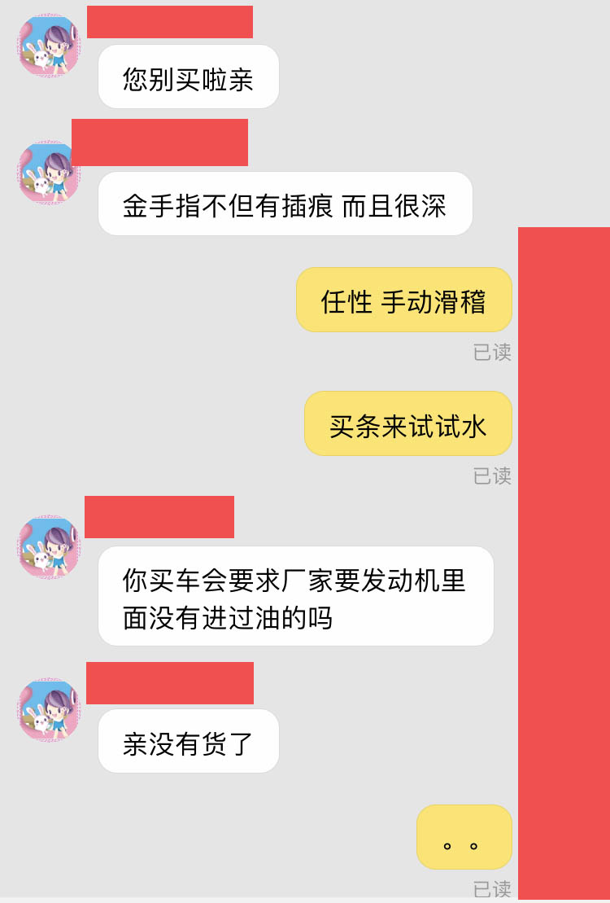
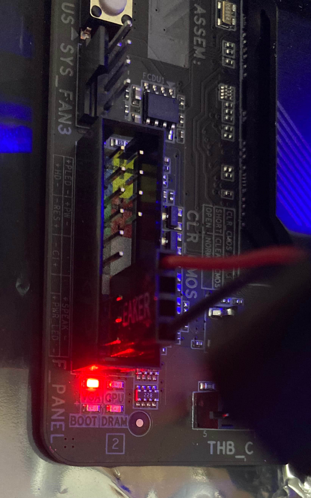
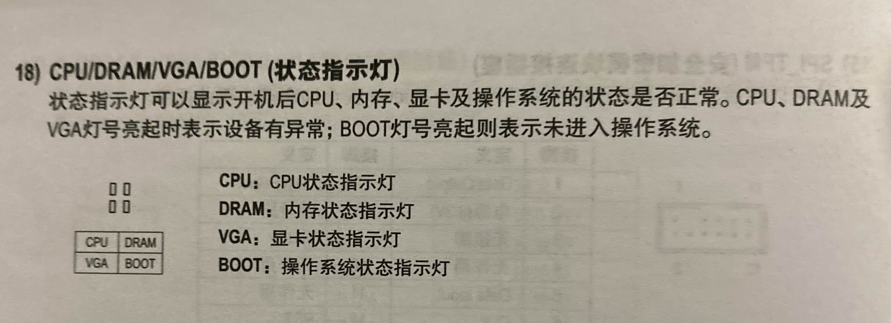
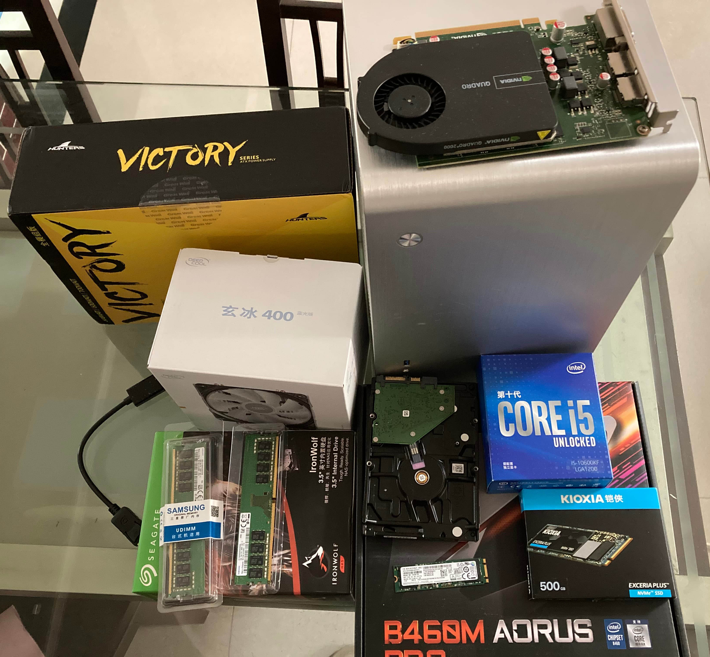
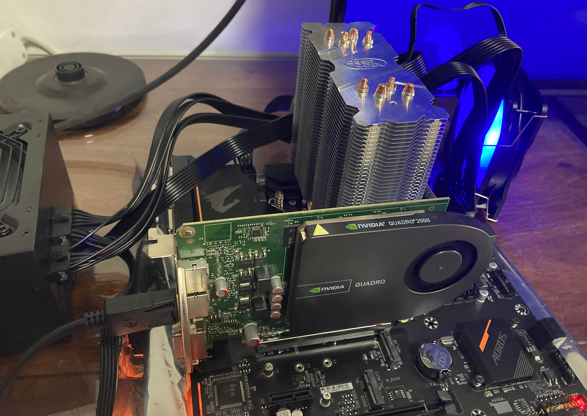
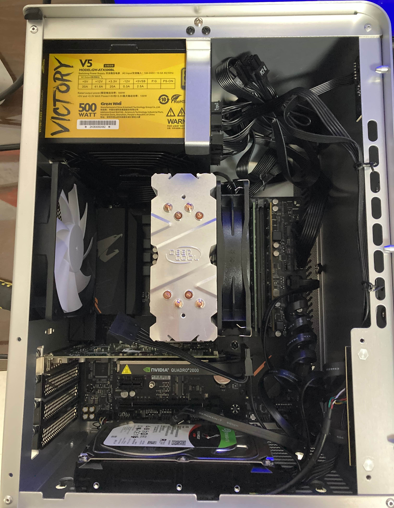
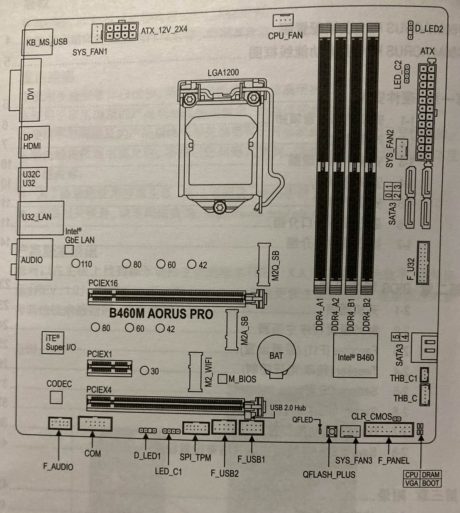
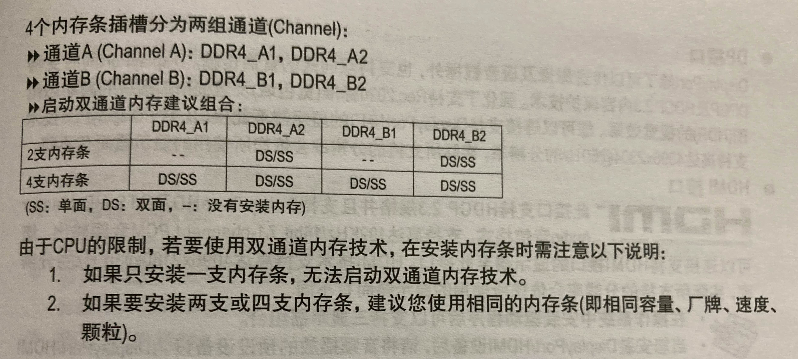

最近因为服役的笔记本性能已经遇到瓶颈，新装了一台新的台式机。上次用台式还是大学那会。虽然 AMD Yes ，但我还是选择了 Intel。（精神股东，滑稽）
这台电脑预计服役 5 年，后续还要考虑小升级的情况。主要用来跑跑 Adobe 全家桶，还有折腾一些系统。关键，数据文件存储就靠它了。
一定要是 ITX
一定要是 ITX
一定要是 ITX
配置单
2021-01
- 机箱 【307,狗东】
乔思伯（JONSBO）U3
* 主板：24.5 24.5
* 硬盘 3.5：2个
* 散热器： 175mm
* 支持水冷 120
* 显卡：260mm
- CPU 【CPU + 主板、散热 1729+69，某宝】
i5-10600KF
* 6/12
* 125w
* DDR4-2666
* 4.10/4.80 GHz
* PCI 3.0
- 主板
技嘉 B460M AORUS PRO
* 24.4 24.4
* M.2 NVMe SATA
* 双通道 4内存
* 自带 M.2 无线 Wi-Fi 接口
- 散热
玄冰400
- 电源 【369，某宝】
长城 V5 金牌全模组电源
* 500W
* 金牌
* 全模组
- 内存 【218 + 210，某宝】
SAMSUNG
* 8G x 2
* DDR4 2666
- 硬盘 【695，某宝】
希捷 ST4000VN008
* 酷狼 4T
* CMR
- 固态 【509，某宝】
凯侠 RD10
* 带缓存 512M
* TLC
- 显卡 【150，某宝】
丽台 Q2000
花费：4256
---------------------------------
旧硬件：
- 1T 机械硬盘
- 500G MLC SATA M.2 盘
理由
自己用的电脑，在电源和机箱我不想缩预算。这两件套就算其他硬件过时了，还是可以继续拿来别的机器使用。机箱我选了低调的铝合金 ITX 机箱，适合我这种不喜欢光污染的人，简简单单很好看。电源是长城的，买的是全模组的，机箱空间有限，后面如果散热不行，可以定制线来剩下一些空间。一直用这个牌子，没出问题就不换牌子了
CPU + 主板 + 散热器，淘宝一家直接搞定。这个价格，CPU 还是盒装的，我有点怀疑是不是散片自己加个包装的，但这个无伤大雅。主板是小雕的 PRO 版本，不得不说，PRO 还是有点可取的，起码那个散热片的重量就让我直呼好家伙。但是除了散热马甲，看其它评测，貌似和普通的版本没什么区别。官网渠道购买，有无马甲价格差了 100，不是很值得购买。但是淘宝是个神奇的地方，我买的这家还挺便宜的。这家顺带下单玄冰反人类，69，只要69，还要啥自行车。本来还想试试利民的散热器的，罢了，罢了
这个机箱可以容下两块 3.5 寸盘，我两个盘位都用了。买了一个酷狼来体验，希望稳一点
内存没啥说的，最近也涨价。我问了很多店，基本金手指都有痕迹。京东的回答是这样的：

我分开两家店买，两条都有轻微的划痕，这个真的不好判断是不是二手。。。
一提显卡就心累，加价五六百还要抢购。挑这个时候装机，选了个 10 年前上市的丽台亮机卡。先用着吧
固态挑了很多评测推荐的 凯侠（东芝） RD10。这年头 MLC 难找。就算找到了，那个价格，啧啧啧（没错，我就说你三星）。妥协用了 TLC。
不足
淘宝购买方式
狗东的服务态度还是物流，都是淘宝不能比及的。但是你架不住它每件商品能给你便宜一点（至于为什么便宜，这个很值得考量）。为了省那个几十块，你在淘宝需要花精力去辨别这个产品是不是翻新的、有瑕疵的。我在购买那个希捷的硬盘时，狗东原价接近 800 的硬盘。在淘宝你能找到 400，500，600 等价位的商家。你知道我看到 400 价位时差点剁手吗？比较了两三家 400-500 价位的商家，评论都看了几遍。基本都是正常，没翻车。直到我看到一个买家评论了：用膝盖想想都知道是翻新的。我刹住车了。我也没法验证那些低价硬盘的质量，只得折中选了个国行盒装的，价格比京东低。买回来，包装盒和硬盘上的 SN 号一致，软件查看 SN 也一样。到这里，我只能认为是全新正品。我没有去希捷官网查看 SN，这个 SN 号伪造应该不难吧？现在中国的造假仿制技术修改硬盘信息都不是问题。我买的那个硬盘，实测拷贝了 2T 的数据，速度不错，几天体验下来，没啥问题。后续再继续观望吧

我就问你，看到这个价格，能不心动吗？关键淘宝很多这个价位是没有标注翻新二手之类的字样！淘宝的信息不对称，加上自己喜欢贪便宜（不排除有些没税的商家嘛），我觉得以我的购物趋向，在淘宝买到劣质商品的比例可能要高过拼多多了。所以机器能点亮装系统之后，第一件事就是运行各种硬件测试工具。
另一个比较窝心的事：那个长城的电源也是便宜 30 块买的，结果模组线包装是拆过的，少了一条 SATA 电源线。我用不到那么多 SATA，就没计较，不过差评是少不了的。还是信息不对称和贪便宜造成的。。。。。
还是那句话，一分钱一分货。千万别贪便宜
还有一个问题，这个也不能称得上是问题，淘宝第一次遇到，纪念一下

散热器割手
从第一个玄冰 400 开始，估计已经用了五六个了，每次手都避免不了被割几个划痕，对得起反人类 400 这个称号主板
这个才是我这回装机的大坑。买的是技嘉的主板，这货居然把 CSM disable 了。搞得我那个亮机卡识别不了，买的又是无核显的 CPU。主板一直报错。这个问题一开始不确定问题所在，把能卸的硬件全都拆了，来回折腾了几次。你要知道这个是 ITX 机箱啊，那个心情。。。
刚开始报错是蜂鸣器短响五下，查了下，CPU 错误。我擦，坏的 CPU 都能让我买到，我可以去买乐透了。但后面问了卖家，是显卡的锅，准确来说，是主板的 BIOS 的设置认不出这个亮机卡。现在的主板上面带有指示灯可以查看是哪个部件出问题（以前一直不知道这些灯的作用，现在懂了排错还是挺有用的，赞一个）


更多的信息，可以参考知乎的这个帖子，感谢大佬指路。
显卡
10年前的亮机卡，只能支持到 1080p，而且只有 DVI 和 DP 口。
后续升级
显卡
听说英伟达 2020 的销售额完成了，发布的新卡都成了空气卡。英伟达的崛起就靠你们矿老板了！只能等矿热之后价格减下来再说了。内存
后面降价再买两条 8G。这个不难。存储
- 后续加一个 2.5 寸 SATA 盘，安装黑苹果或 Linux。
- 继续堆机械硬盘，目前 4T + 1T 的配置估计半年就告急，后面淘汰 1T，换成 6T 的
无线
考虑黑苹果，或者网络的限制，加个 PCI 或 M.2 的无线网卡
总结
- 差价不上 30 的，以后都狗东买算了。淘宝心累
- 主板 CPU 套装 可以无脑淘宝。
- 存储之类的，我就认命，买来测试没问题就行。靠金手指来判断已经行不通了。
附上几张照片吧，没多拍



其他
如果有四个内存插槽，内存顺序怎么安排？


如果只有两条内存组成双通道，那就用 A2 和 B2 口